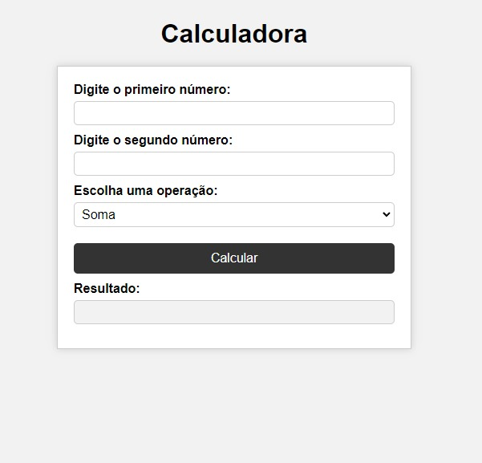

Portfólio
Apresentação da minha calculadora:
Apresentando a minha Calculadora, uma ferramenta simples e eficaz para cálculos matemáticos básicos. Com uma interface intuitiva e fácil de usar, permite que você realize operações de soma, subtração, multiplicação e divisão com apenas alguns cliques. Além disso, a calculadora apresenta o resultado instantaneamente, facilitando ainda mais o seu trabalho. Se você precisa de uma calculadora confiável para o seu dia a dia, experimente a nossa Calculadora.
